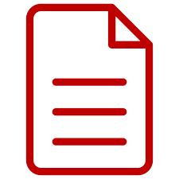
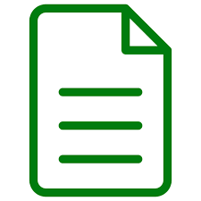
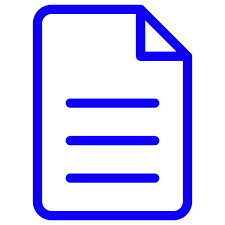

Hi, my name is Mili
and I am a passionate
My Projects

The registration form project is a software application designed to capture and store
information about individuals who wish to register for FreeCodeCamp.com. It provides a
user-friendly interface for collecting data and ensures the accuracy
and completeness of the information provided by the registrants.

A tribute page project about Sundar Pichai is a web-based application designed to honor and
celebrate the achievements and contributions of Sundar Pichai, the CEO of Google and Alphabet
Inc. It serves as a dedicated platform to provide information, anecdotes, and inspiring stories
about Sundar Pichai's life and career.

A Java documentation website project is a web-based application that serves as a centralized
platform for hosting and browsing documentation for Java libraries, frameworks, or applications.
It provides a user-friendly interface for developers to access comprehensive and up-to-date
documentation, enabling them to understand and effectively utilize the Java codebase.
The ice cream survey form project is a web-based application designed to collect data and
opinions from users about their ice cream preferences and experiences. It provides a
user-friendly interface for respondents to provide their feedback, allowing the survey creator
to gather valuable insights and make informed decisions based on the data collected.